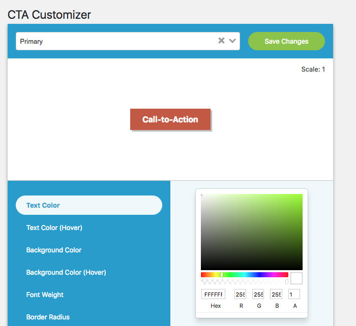
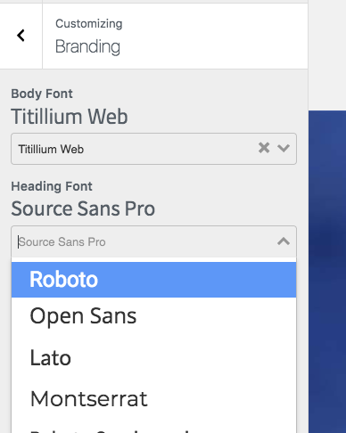

Styling and Animating in Vue.js
Presented by Tarik Hamilton
A Little About Me and My Experience
- Lead developer at The Symphony Agency, a digital marketing agency
- Used Vue in production for over a year in WordPress and Laravel
- Used as an app's entire front-end, as part of a theme, and apps in a larger system
A Little About Me and My Experience (cont'd)
A Little About Me and My Experience (cont'd)
A Little About Me and My Experience (cont'd)
Getting Started
Single File Components
- Preferred and default setup provided by
vue-cli .vuefiles contain a<template>,<script>, and<style>tag- Style tag lets you write SCSS, Sass, Less, or CSS as you normally would with optional scoping.
<style lang="scss" scoped>
CSS Modules Demo
DemoUsing Data and Props in Your Styling
Styling Recommendations
Styling is really opinionated and is going to vary team to team.
- You don't have to use BEM (block__element--modifier), but use a naming convention.
- Always use classes, never tag selectors.
- Keep common styles like typography (size, weight, color) and complex properties (box-shadow, backgrounds) as mixins.
@mixin bigCoolAndUgly {
font-family: Impact;
font-size: 3rem;
color: blue;
}
.page-title {
@include bigCoolAndUgly();
}
Using Computed for Styling
Computed properties listen for changes on the data or props that are used inside its function.
This makes them ideal for altering styles based on component state
template: `
<div class="meter"><div class="fill" :style="fillStyle"></div></div>`,
props: {
fill: Number,
max: Number
},
computed: {
fillStyle() {
return {
width: this.fill / this.max * 100 + "%"
};
}
}
Using Computed for Styling (cont'd)
Why not use data or props directly?
- Computed is easier to use because you can keep your numbers as numbers.
px,rem, etc make many CSS properties strings. - In CSS, we use percentages (e.g.:
width: 50%;), but in code and doing calculations, we use the floating-point numbers (e.g.:0.5). - Your data and props should always use
Numberdata type to represent all quantities with JavaScript being our middleman to CSS.
Using Computed for Styling (cont'd)

- Style dependent on user input or dependent on data
- Progress indicators (analog clocks, loading bars)
- Positioning
- UI state
- ... everything else
Using Class Binding for Styling
Class bindings are how you can style based on UI state, such as disabling buttons and applying alternative styles to a component based on data or props.
Using Class Binding for Styling (cont'd)
Slightly confusing if you do it in the template and mix arrays and objects.
['btn', disabled ? 'disabled' : '']{
btn: true,
disabled: disabled // key = class, value = expression
}
[
'btn',
{
disabled: disabled // key = class, value = expression
}
]
Feed Gary Demo
Feed Gary DemoTransitions
Enter/Leave Transitions
Wrapping your code in
<transition name="yourTransition">, Vue will automatically apply classes representing the state of your transition when an element or component is revealed.
You also get JavaScript hooks!
Enter/Leave Transitions (cont'd)
.fade-enter-active,
.fade-leave-active {
transition: all 400ms;
}
.fade-enter-to {
opacity: 1;
transform: scale(1.2);
}
.fade-enter {
transform: scale(0.1);
}
.fade-leave {
transform: scale(1);
}
.fade-enter,
.fade-leave-to {
opacity: 0;
}
(This scrolls, btw)